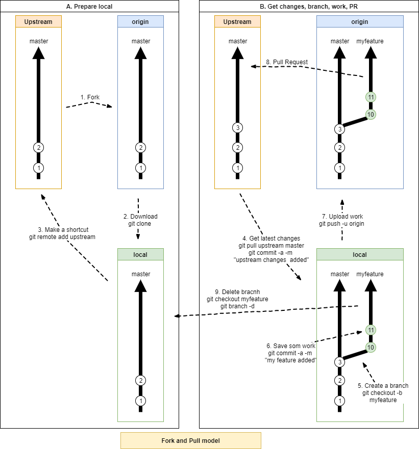

Contributing to Open Source
Posted on October 14, 2017 in Develop Updated: October 27, 2017
What is needed to contribute to Open Source hosted in Git?
It is quite a bit - read all about it here.
This blog post assumes you contribute by doing changes to a git repo.
So In short you need to
- Choose a project you will do changes into
- Follow below Git Workflow
Abbreviations
Before start you need to get a little list of vocabulary
| Abbr | Full | Meaning |
|---|---|---|
| PR | Pull Request | Your code submitted for review before merge into Upstream |
| Repo | Repository | A project folder under source control having a \.git\ subfolder |
| WIP | Work In Progress | Comment in PR for unfinished code - indication feedback wanted before going too far on a wrong tangent |
| # | “Closes #37.” | Comment with reference to an issue |
| Git Contributer | Person, who sends a Pull Request | |
| Git Maintainer | Person, who merges a Pull Request | |
| Fork and Pull model | One out of two development models | |
| Shared Repository model | One out of two development models | |
| Upstream | A repo where you want to merge PR's into |
Next thing you need to know is that the master branch is always production - meaning - you do your work in a feature branch and you ask the owner of the repo if he wants your changes. Often a discussion will follow and possible more changes you will have to do - including deploy to test - before it perhaps is accepted by being merged into the master.
In more details here is a visual flow.
Since you are just starting you are probably not member of a team, that has access to a shared repo.
Thus you need to contribute with the Fork and Pull model

I use two phases
- A. Prepare
- B. Do the work, PR and cleanup
In that way you can do A. Prepare only once and repeat phase B.
A. Prepare
# 1. Create a Fork of the repo you will contribute to
# 2. Download your Fork (origin)
git clone https://github.com/your_userid/ORIGINAL_REPOSITORY.git
cd ORIGINAL_REPOSITORY
# 3. Add Upstream as a remote
git remote add upstream https://github.com/ORIGINAL_OWNER/ORIGINAL_REPOSITORY.git
git remote -v
B. Do the work, PR and cleanup
# 4. Download latest changes from upstream
git pull upstream master # or rebase
# handle possible conflicts: https://help.github.com/articles/addressing-merge-conflicts/
git status
git commit -a -m "upstream changes added"
# 5. Create a feature branch
git checkout -b mynewfeaturebranch
# 6. Do some work and save
git commit -a -m "made a nice feature"
# 7. Push branch to fork
git push -u origin mynewfeaturebranch
8a. Pull Request to upstream - from Fork
You are then rewarded with this image for the first PR, if it was GitHub you contributed to
- 8b. Listen for feedback
You can see your PR's here. Maintainers will make comments in there. - 8c. Maintainer merges feature branch to upstream
Remember - Always be polite. Maintainers are in their good right to not care about your contribution.
If you don't like that you can just keep working on your perfect fork.
But if you only have your fork for PR's, then it is time to do clean-up, so you can do another cycle.
# 9. Delete mynewfeaturebranch
git checkout mynewfeaturebranch
git branch -d
Find a project
Knowing how to create a PR, you can now go out and look for a project to contribute to
- Read CONTRIBUTING, CODE_OF_CONDUCT and/or README
- https://github.com/MunGell/awesome-for-beginners
- https://github.com/showcases/great-for-new-contributors
- Hacktoberfest - DigitalOcean
- #Hacktoberfest
Next steps
- https://opensource.guide/
- See bottom of Patchwork
@osteele's GIT commands

Links
- How To Rebase and Update a PR
- https://opensource.guide/how-to-contribute/#orienting-yourself-to-a-new-project
- https://medium.freecodecamp.org/a-beginners-very-bumpy-journey-through-the-world-of-open-source-4d108d540b39
- http://www.firsttimersonly.com/
- https://help.github.com/articles/github-flow/
- https://help.github.com/articles/working-with-forks/
- Content - When Asking for Pull Requests
- Merge local from upstream - when using Fork and pull
- Allow maintainers to make changes to your branch
Get started links
- Git-it - a git exercise
- @osteele's GIT Workflow
- Git - by slides by @acanimal
- Git Cheatsheet
- the GitHub Flow
- GitHub hello-world
- Git and VS2017
- A Git branching model
The End